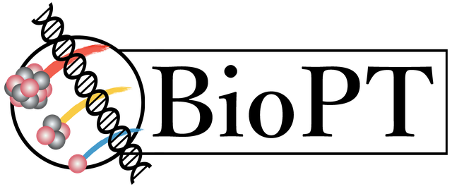

Biophysics in Particle Therapy
BioPT is an interdisciplinary research group based at the Heidelberg Ion-Beam Therapy Center (HIT), working to advance ion beam therapy for cancer treatment. We collaborate with clinicians and researchers to develop biological models, simulation tools, and treatment planning approaches for particle therapy. For more information, check out our official homepage.
Open Positions
Postdoctoral Researcher in Medical Physics / Monte Carlo Simulation for In-Beam PET and FLASH Particle Therapy (m/f/d)
Starting 01.06.2026 at the Heidelberg Ion Beam Therapy Center.
About FLASHVIVO
FLASHVIVO is a collaborative research and development project focused on real-time, in-vivo PET verification and biological guidance for FLASH particle therapy. Within the project, BioPT contributes Monte Carlo modeling, activity prediction, data analysis and experimental validation workflows to help verify treatment delivery under ultra-high dose rate conditions. More about FLASHVIVO.
Your Tasks
- Further develop MonteRay for PET activity prediction in particle therapy, including FLUKA-based cross-section data and biological washout models.
- Design, implement, test and document software modules for the simulation and analysis pipeline.
- Plan and evaluate validation experiments with phantom setups in collaboration with project partners.
- Coordinate reference calculations, measurement comparisons and quality assurance workflows.
- Prepare scientific publications and present project results at national and international conferences.
Your Profile
- PhD in physics, medical physics, computer science, mathematics, engineering, or a related field.
- Experience in scientific software development; C++, Python, simulation or data analysis experience is an advantage.
- Ability to work with existing C++-based scientific software and complex simulation workflows.
- Independent, structured working style, very good English skills and ability to work in an interdisciplinary team.
Employment Conditions
- Full-time position, fixed-term for two years.
- Remuneration according to TV-L E13, 100%; the final salary level depends on relevant professional experience.
Please attach a CV to your application.
Contact: Prof. Dr. Andrea Mairani, andrea.mairani@med.uni-heidelberg.de
Master's Thesis: GPU-Accelerated Monte Carlo Dose Calculation
Description
Fast and accurate Monte Carlo dose calculation is an important step toward adaptive particle therapy, including future workflows guided by in-room MRI. This thesis focuses on accelerating the in-house MonteRay dose engine on GPUs, with a particular interest in dose calculation in complex magnetic fields.
Your Tasks
- Profile selected parts of the MonteRay dose calculation workflow.
- Identify suitable parallelization strategies for GPU execution.
- Implement and test selected GPU-accelerated components.
Your Profile
- Ongoing Master's studies in physics, medical physics, computer science, mathematics, engineering, or a related field.
- Experience with programming or scientific computing in any language; C++, Python, Julia, MATLAB, or comparable tools are all useful.
- Interest in C++-based scientific software, Linux, Git and CMake.
- First experience with CUDA, GPU computing or parallel programming concepts is helpful but not mandatory.
- Good English skills and a careful, structured working style.
Eligibility
These thesis topics are primarily aimed at Master's students in Heidelberg. Students from other universities are also welcome to apply if their Prüfungsordnung allows an external Master's thesis.
Please apply only if you:
- are currently enrolled in a relevant Master's programme,
- can be regularly present at HIT in Heidelberg,
- understand that this is an unpaid thesis project,
- do not require visa, housing, relocation, or living-cost support from us.
Please mention your university, degree programme, planned start date, and whether your Prüfungsordnung allows an external thesis. Please attach a CV, your recent Master's grade report, and your Bachelor's grade report.
Last update: 13.05.2026
Contact: Peter Lysakovski, peter.lysakovski@uni-heidelberg.de
Master's Thesis: Mini-Beam Oxygen Ion Therapy in MonteRay
Description
Mini-beam therapy uses spatially fractionated dose distributions to spare healthy tissue while maintaining strong tumor control. This thesis focuses on extending MonteRay for oxygen ion and mini-beam therapy studies, combining simulation work with possible experimental validation.
Your Tasks
- Set up mini-beam geometries and oxygen ion therapy scenarios in MonteRay.
- Integrate or validate relevant interaction data for oxygen ions and filter materials.
- Run and analyze Monte Carlo simulations for selected treatment configurations.
- Compare simulation results with experimental measurements where available.
Your Profile
- Ongoing Master's studies in physics, medical physics, computer science, mathematics, engineering, or a related field.
- Experience with programming, data analysis, or scientific computing in any language.
- Interest in particle therapy, Monte Carlo simulation, treatment planning, or experimental validation.
- Willingness to learn to work with scientific software, Linux, Git and CMake.
- Good English skills and a careful, structured working style.
Eligibility
These thesis topics are primarily aimed at Master's students in Heidelberg. Students from other universities are also welcome to apply if their Prüfungsordnung allows an external Master's thesis.
Please apply only if you:
- are currently enrolled in a relevant Master's programme,
- can be regularly present at HIT in Heidelberg,
- understand that this is an unpaid thesis project,
- do not require visa, housing, relocation, or living-cost support from us.
Please mention your university, degree programme, planned start date, and whether your Prüfungsordnung allows an external thesis. Please attach a CV, your recent Master's grade report, and your Bachelor's grade report.
Last update: 13.05.2026
Contact: Peter Lysakovski, peter.lysakovski@uni-heidelberg.de
General Inquiries
For general questions or if you're interested in joining the group, please contact:
Prof. Dr. Andrea Mairani, andrea.mairani@med.uni-heidelberg.de